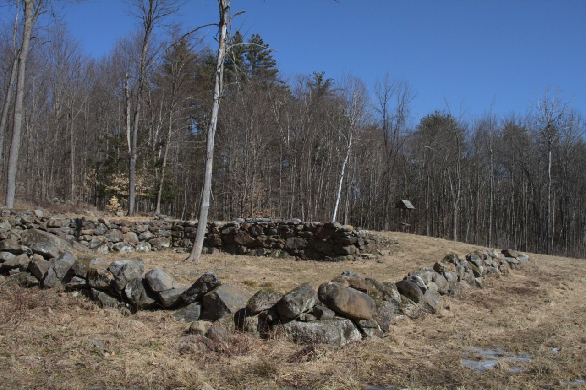

We can have a picture here.
Boscawen's Conservation Commission is a group of volunteers working together to make the town of Boscawen, NH a nice place to live by preserving the town's natural resources and making them available to the community in a sustainable way. Click here to learn more about the Commission.
If you know where you want to go or you want to browse through the site contents you can use the navigation bar at the top of the page. If not, read on!
This website contains information about the Town Forests including our newly designated Walker Pond Town Forest. This includes trail maps, directions, and a brief history of the forests and their acquisition by the town. All this can be found here.
Aside from the Town Forests the Commission is involved in a number of other projects in town. The Morrill Easement is the largest of several easements and was purchased in a joint venture with the Society for the Protection of New Hampshire Forests. Timber harvests occasionally take place on Town land. These are done primarily to preserve the health of the forest, but also provide revenue to the Town. To learn about these and other projects, look here.
Occasionally, the Commission prepares educational material for the community, which is available here. Although this is primarily intended for residents of Boscawen the majority is applicabe to anyone in a much larger area.
